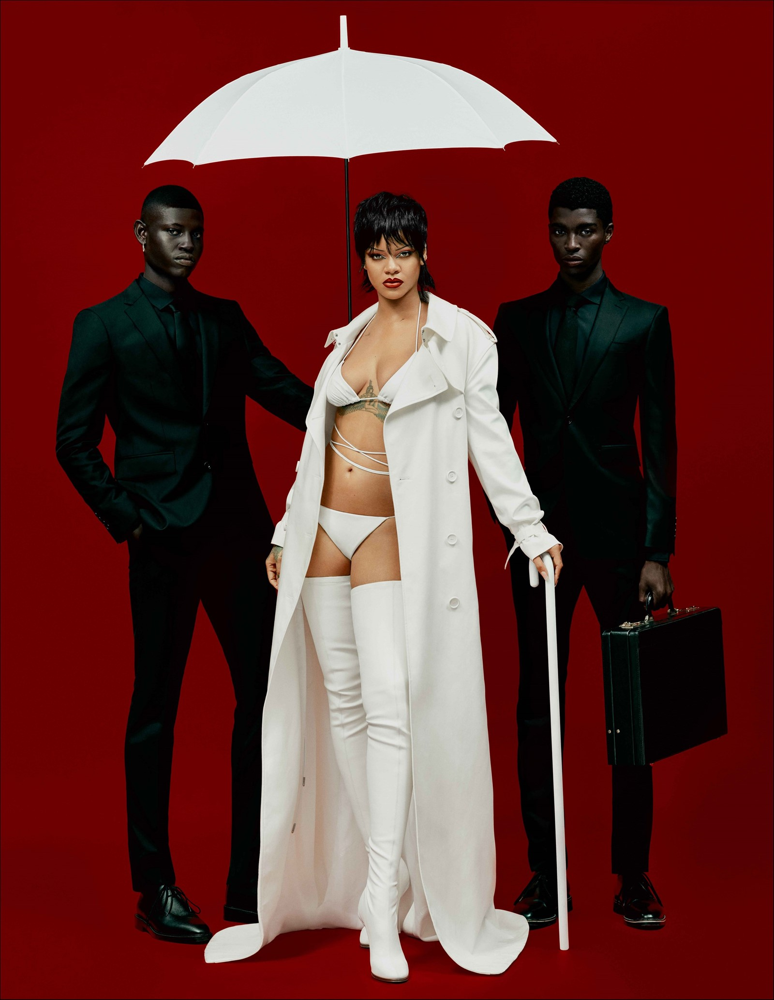
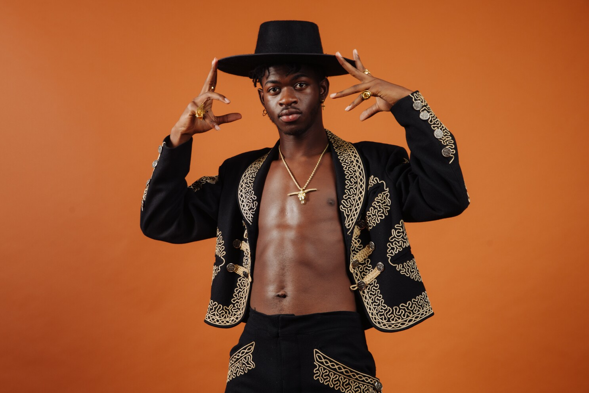
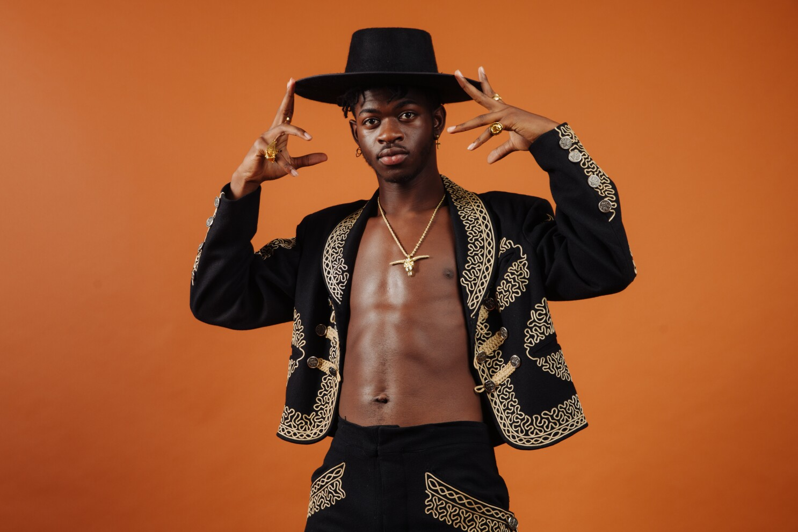
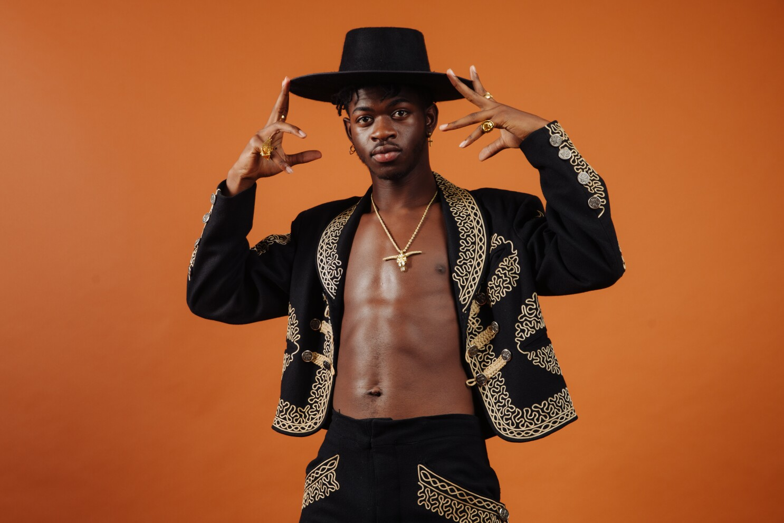

 



Beyonce, similar to her musical peers Rihanna and Nicki Minaj has shown society the importance of a strong leading woman. One who is multidimensional and more than her music career. Beyonce has extended her career into cinema, and fashion.
Rihanna had definitely trailblazed a path for black women in the music industry. Shifting effortlessly through genres and personas she highlights the multi-dimensional elements of black women, shifting the conversation away from the stereotypical biases placed on women.